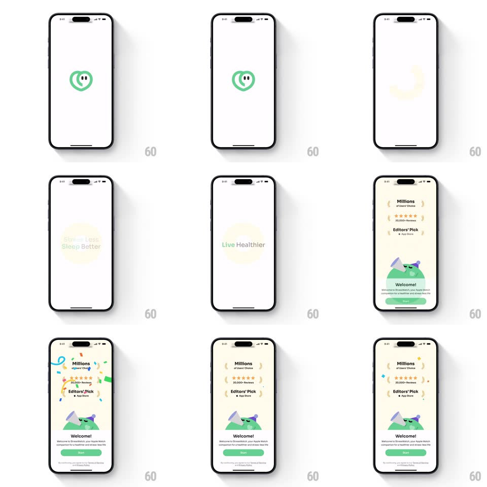

Media
Frame-by-frame

Rebuild this animation 1:1: StressWatch's splash-to-onboarding - the green heart-pulse logo draws in and morphs, a circular mask expands while value props cycle inside it ("Stress Less", "Sleep Better", "Live Healthier"), then the mask keeps growing to reveal the laurel-covered welcome screen.

Rebuild this animation 1:1: StressWatch's splash-to-onboarding - the green heart-pulse logo draws in and morphs, a circular mask expands while value props cycle inside it ("Stress Less", "Sleep Better", "Live Healthier"), then the mask keeps growing to reveal the laurel-covered welcome screen.
## Integration
Integration: stack-agnostic spec - springs given as stiffness/damping, timed motions as duration + curve; map every value to your framework and animation library of choice.
## Scene
White splash: green StressWatch mark (heart outline with pulse line + eyes). Value-prop stage: green text inside a soft pale-yellow circle. Welcome screen: laurel badges (Millions of Downloads, 30,000+ Reviews, Editors' Pick), mountain illustration, "Welcome!" copy, green Start button.
## Motion spec
Pattern: logo morph + expanding circular mask reveal.
- Logo strokes draw on (500ms), then the mark does a gentle pulse (scale 1 -> 1.08, 600ms, like a heartbeat).
- The logo morphs into the circle mask: the heart shape scales up and softens into a pale circle (500ms) as the first value prop fades in inside it.
- Value props cycle every ~1.2s: outgoing text blurs + fades (200ms), incoming unblurs (300ms) - the circle breathes (scale ±4%) with each swap.
- Final cycle: the circle expands past the screen edges (600ms ease-in), becoming the welcome screen's cream background; laurel rows stagger in (120ms apart, fade + rise 10px, 250ms), the mountain illustration draws up from the bottom (400ms), "Welcome!" + Start land last.
- Sparkle accents pop around the laurels (3 sparkles, scale + fade, 150ms each, staggered).
## Calibration
- The circle is the continuous element through the whole sequence - it never disappears, only grows.
- Text inside the circle stays centered and fixed-size while the circle breathes.
## Reduced motion
Logo fades to the circle; props crossfade; final reveal is a flat fade.
## Don't miss
- The logo has a face (two eyes inside the heart) - it's a mascot, not a plain glyph.
- Laurels use curly-brace ornaments flanking each stat.